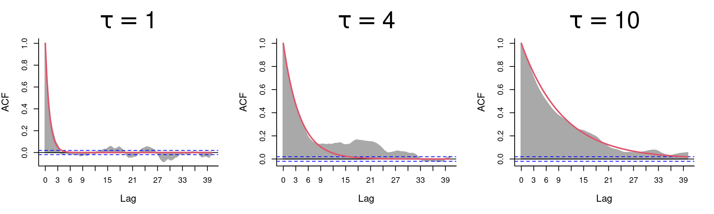

13 Continuous time movement models
Continuous time movement models have been around a while, but have historically been rarely implemented by ecologists. Mostly because of intimidating math and inaccessible tools. This is changing as relatively recent (convergent) developments have led to brand new tools with considerable potential.
Why a continuous time model at all? Mainly, because: (1) movement is a continuous process in time, (2) sampling regimes can be highly irregular, (3) …
13.1 Model 1: Brownian Motion
Brownian motion is a process where (observed) velocities have zero temporal correlation, and the position is the integral of the velocities. It is essentially the continuous time equivalent of the uncorrelated random walk :
\[ Z(t) = Z(0) + \int_0^t V(t) dt \] where \[ V(t) = \beta\,dW_t\] where: \(W_t\) - is 2D “white noise”, i.e. independent Gaussian process in \(x\) and \(y\). \(\beta\) - is the magnitude of the randomness
Note: the diffusion constant \(D = \sqrt{\beta/2}\). The “diffusion constant” - has units of distance^2 / time - is the rate of increase of the Mean Squared Displacement, i.e. \[ E( (Z(t)-Z(0))^2) = 2Dt \]
Here’s some sample code to simulate Brownian Motion
beta <- 2
W <- rnorm(10000,0,1) + 1i*rnorm(10000, 0, 1)
V <- beta*W
Z <- cumsum(V)
plot(Z, asp=1, col=rgb(0,0,0,.5), pch=16, cex=.5)Note: that cumsum is the equivalent of a discrete integration at time step 1
\(\tau = 1\)
Brownian Motion is basically an idealized pathological non-biological fiction. However, it can be the “only” model that fits data if velocities are uncorrelated, the positions are unconstrained over many observations. It is also the simplest model that is (strangely) well-defined in continuous time (\(\Delta t \to 0\))
A simple assessment of the autocorrelation of the velocities reveals a total absence of autocorrelation:
The autocorrelation of the positions however is extremely high. This is the nature of any integrated random walk … where you now depends very very much on where you were recently!
13.2 Model 2: Ornstein-Uhlenbeck Position Process
An Ornstein-Uhlenbeck (OU) process is the continuous analogue of an AR(1) time series. Recall that AR(1) is \[ X_t = \rho (X_{t-1} - \mu) + \mu + Z_t \] where \(Z_t\) is white noise, i.e. Gaussian i.i.d. with variance \(\sigma^2\).
The Ornstein-Uhlenbeck process is expressed in terms of a stochastic differential equation:
\[ {dX \over dt} = -{1\over\tau} (X - \mu) + \alpha W_t \]
Can you see the similarity?
To visualizing a 1-D OU:
plot(OU(tau=1, dt=.1), type="l", xlim=c(0,30), xaxt="n"); abline(h=0, lty=3, col=2)
plot(OU(tau=10, dt=.1, X0=30), type="l", xlim=c(0,30), xaxt="n"); abline(h=30, lty=3, col=2)This process is sometimes called a Mean reversion process.
13.2.1 Some properties of 1D-OU
Variance of 1D-OU process: \[\sigma^2 = {\alpha^2 \tau \over 2}\]
ACF of 1D-OU process:
Predicted acf is: \[\rho(\Delta t) = Cor(X(t), X(t-\Delta t)) = e^{-{\Delta t \over \tau}}\]

13.2.2 OUP: the 2D version
A 2-D OUP models the \(x\) and the \(y\) components of movement as independent OU processes.
\({dZ \over dt} = -{1\over\tau} (Z - \mu) + \alpha W_t\)
A simple function (building off the OU before):
OUP <- function(mux=0, muy=0, ...)
{
X <- OU(mu=mux, ...)$X
Y <- OU(mu=muy, ...)$X
T <- OU(...)$T
return(data.frame(T, Z = X + 1i*Y))
}Some Realizations:
OUP1 <- OUP(dt=.1, tau=1)
OUP2 <- OUP(dt=.1, tau=4, mux=10, muy=2)
OUP3 <- OUP(dt=.1, alpha = 0.5, mux=5, muy=-2)13.2.3 OUP: Spatially Constrained Movement
plot(OUP1$Z, asp=1, pch=16, col=rgb(0.5,0,0,.2), type="o", xlim=c(-3,12), ylim=c(-4,7), cex=0.6)
points(OUP2$Z, asp=1, pch=16, col=rgb(0,.5,0,.2), type="o", cex=0.6)
points(OUP3$Z, asp=1, pch=16, col=rgb(0,0,.5,.2), type="o", cex=0.6)
legend("topleft", col=c("darkred", "darkgreen", "darkblue"), legend=c("tau = 1, alpha = 1", "tau=4, alpha=1", "tau=1, alpha=1/2"), pch=19, pt.cex=1.5, bty="n")Do these trajectories look “realistic” to you?
13.2.4 Reparameterization
The \(\alpha\) parameter is mathematically quite simple, but perhaps a more useful parameterization is in terms of the Area within which the movement is constrained.
The expected distribution of the OUP is bivariate normal, so we could use 95% density of use, given by: \[ A = {1 \over 2}\pi z_p^2 \alpha^2 \tau\] where \[z_p = \sqrt{-2\log(1-.95)} \approx 2.448\]
So, a more biologically meaningful parameterization might be in terms of 95% Area Utilization. Unfortunately, its not as elegant!
\[ {dZ \over dt} = -{1\over\tau} (Z - \mu) + \left({2 A \tau \over \pi z_p^2}\right)^{1/2} W_t \]
To encode this reparameterization in R:
OUP <- function(mux=0, muy=0, A = 100, ...){
zp <- sqrt(-2*log(1-.95))
alpha <- sqrt(2*A/ (pi*zp^2*tau))
X <- OU(mu=mux, alpha=alpha, ...)$X
Y <- OU(mu=muy, alpha=alpha, ...)$X
T <- OU(...)$T
return(data.frame(T, Z = X + 1i*Y))
}Quicky assignment: Enter this revised OUP and see that it gives the correct 95% area!
13.4 The smoove package
Contains tools for simulating and estimating several extensions of CVM models:
| Model | \(\alpha\) | \(\mu\) | Notation |
|---|---|---|---|
| Unbiased CVM | \({1 / \tau}\) | 0 | UCVM(\(\tau, \nu\)) |
| Advective CVM | \({1 / \tau}\) | non-zero | ACVM(\(\tau, \eta, \mu_x, \mu_y\)) |
| Rotational CVM | \({1 / \tau} + i\omega\) | 0 | RCVM(\(\tau, \eta, \omega\)) |
| Rotational-Advective CVM | \({1 / \tau} + i\omega\) | non-zero | RACVM(\(\tau, \eta, \omega, \mu_x, \mu_y\)) |
13.4.1 Ornstein-Uhlenbeck-F
The (amazing but terribly named) Ornstein-Uhlenbeck Foraging (or Fleming?) model is hybridized the OU-Position and CVM models:
\[ {d \over dt} {z}(t) = -{1 \over \tau_z}({z}(t) - \mu_z) + {u}(t) \] \[ {d \over dt} {u}(t) = -{1 \over \tau_u}{u} + \beta\,W_t.\]
- \(\tau_u\) is time scale of “pseudo-velocity” process
- \(\tau_z\) is time scale of coverage of constrained area (“home range”) > Note, we are still struggling with some of the nomenclature
The position is a stochastic process that “relaxes” to the mean location \(\mu_z\) at rate \(\tau_z\) with a “stochastic kick” that is given by an additional velocity component that is identical to the CVM.
OUF <- function(Tmax = 100, mu.z = 0, tau.z = 10, tau.u = 1,
beta = 1, dt = .1, z0 = 0, u0 = 0, A = NULL)
{
T <- seq(0,Tmax,dt)
n <- length(T)
U <- T*0
Z <- T*0
dW <- (rnorm(n) + 1i*rnorm(n))*sqrt(dt)
U[1] <- u0
Z[1] <- z0
for(i in 2:n)
{
U[i] <- U[i-1] - (1/tau.u * U[i-1])*dt + beta*dW[i]
Z[i] <- Z[i-1] - (1/tau.z * Z[i-1])*dt + U[i]*dt
}
return(Z)
}\[\tau_z = 10; \tau_u = 1\]
\[\tau_z = 100; \tau_u = 1\]
\[\tau_z = 1; \tau_u = 1\]
The OUF is spatially constrained
\[A = {\pi z_p^2 \over 2} \left({\tau_u^2 \tau_z^2 \over \tau_u + \tau_z}\right) \beta^2\]
Note: Mean speed of movement is also a (likely tractable) function of \(\tau_z\) and \(\tau_u\)
14 OUF: Sample tracks
15 CVM: References
Gurarie, E., C. Fleming, K. Laidre, O. Ovaskainen. (very close to submission). Characteristic spatial and temporal scales unify models of animal movement and fundamental ecological processes. The American Naturalist. 178:113-23.
Gurarie, E., O. Ovaskainen. 2011. Characteristic spatial and temporal scales unify models of animal movement and fundamental ecological processes. The American Naturalist. 178:113-23.
Johnson, D., J. London, M. -A. Lea, and J. Durban (2008) Continuous-time correlated random walk model for animal telemetry data. Ecology 89(5) 1208-1215.